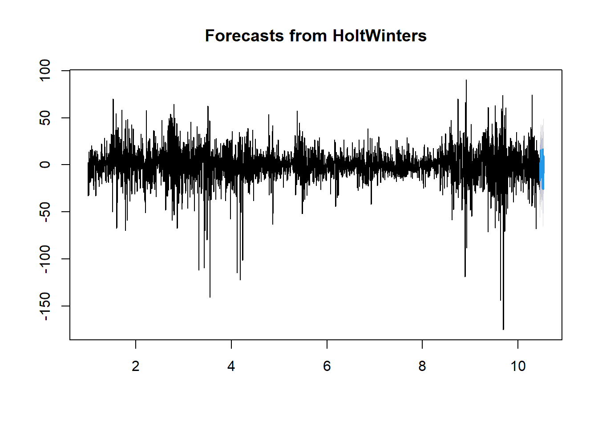
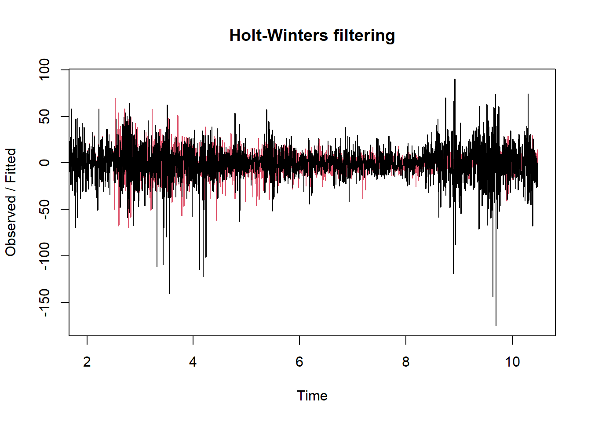

Chapter 11 Holter-Winter
La metodología Holt-Winters, también conocida como triple suavizado exponencial, es útil para series de tiempo con componentes de tendencia y estacionalidad.
## Warning: package 'forecast' was built under R version 4.2.3# Ajustar el modelo Holt-Winters
hw_model <- HoltWinters(soybean_ts)
# Visualizar componentes del modelo
plot(hw_model)
# Pronosticar los siguientes 30 días (o la cantidad que desees)
library(forecast)
hw_forecast <- forecast(hw_model, h = 30) # Cambia 30 por el número de periodos que quieras pronosticar
plot(hw_forecast)
## Length Class Mode
## fitted 12348 mts numeric
## x 3452 ts numeric
## alpha 1 -none- numeric
## beta 1 -none- numeric
## gamma 1 -none- numeric
## coefficients 367 -none- numeric
## seasonal 1 -none- character
## SSE 1 -none- numeric
## call 2 -none- call##
## Forecast method: HoltWinters
##
## Model Information:
## Holt-Winters exponential smoothing with trend and additive seasonal component.
##
## Call:
## HoltWinters(x = soybean_ts)
##
## Smoothing parameters:
## alpha: 0.001513595
## beta : 0
## gamma: 0.3523387
##
## Coefficients:
## [,1]
## a -1.929391138
## b -0.001484417
## s1 4.582162383
## s2 2.917054320
## s3 -2.792023886
## s4 16.438699482
## s5 10.324668487
## s6 17.926924350
## s7 5.229401015
## s8 -11.326377965
## s9 0.963002245
## s10 3.007431334
## s11 1.798317222
## s12 -3.367555137
## s13 -0.288966674
## s14 -6.256853382
## s15 0.468146356
## s16 6.237588050
## s17 4.798310102
## s18 -4.144225802
## s19 -9.696902544
## s20 3.720422996
## s21 6.916946502
## s22 -0.323101548
## s23 18.792492632
## s24 -23.815178035
## s25 11.560375345
## s26 -6.126604491
## s27 11.363620621
## s28 6.818268284
## s29 -6.403242763
## s30 1.183016479
## s31 0.671356135
## s32 18.851600512
## s33 10.311896291
## s34 -16.750753452
## s35 7.154940441
## s36 18.997617648
## s37 -4.232110804
## s38 2.587679523
## s39 10.740245891
## s40 5.347627847
## s41 8.698699935
## s42 3.632347595
## s43 -10.917325854
## s44 -1.966024311
## s45 0.948067100
## s46 10.231119777
## s47 4.127298154
## s48 -5.211077122
## s49 -6.615404268
## s50 -21.180146051
## s51 12.973504422
## s52 7.723456160
## s53 16.768126045
## s54 -0.163355807
## s55 -4.699983094
## s56 -18.563517056
## s57 -14.144309214
## s58 -12.700828126
## s59 15.057799618
## s60 17.042194147
## s61 7.282569696
## s62 -20.771751904
## s63 1.987600563
## s64 6.129687038
## s65 -52.312998249
## s66 14.410245702
## s67 -8.416780621
## s68 -9.268680523
## s69 -6.020895243
## s70 11.064892994
## s71 2.825000670
## s72 27.504347880
## s73 18.069057262
## s74 14.719539445
## s75 8.705219038
## s76 -16.209724754
## s77 -8.319567688
## s78 -1.276135074
## s79 30.522192082
## s80 10.203557698
## s81 -0.136192108
## s82 26.162721641
## s83 -1.440324386
## s84 12.807794895
## s85 -13.426041132
## s86 -60.788271125
## s87 -6.660617534
## s88 11.418984967
## s89 7.679685592
## s90 -9.997822602
## s91 14.116502278
## s92 19.211660994
## s93 0.539178182
## s94 -2.873923293
## s95 17.775781959
## s96 -28.214970933
## s97 0.776003611
## s98 -0.497434437
## s99 -5.872658545
## s100 12.762425533
## s101 -5.352988480
## s102 -10.681658678
## s103 0.421714157
## s104 0.427871448
## s105 38.625818330
## s106 -10.549033307
## s107 -7.761475630
## s108 -14.387806014
## s109 -2.771739765
## s110 9.087295651
## s111 2.484195187
## s112 -13.370816176
## s113 1.294512835
## s114 -5.527608642
## s115 0.146940645
## s116 7.023424623
## s117 6.310197846
## s118 4.266829113
## s119 -10.795176126
## s120 13.072370600
## s121 2.335212768
## s122 1.590108116
## s123 -7.780563459
## s124 4.557244385
## s125 0.889611758
## s126 10.300452874
## s127 1.838701772
## s128 3.100609200
## s129 -3.663511676
## s130 5.181658124
## s131 -1.532601854
## s132 -0.960802162
## s133 8.508378200
## s134 6.912061490
## s135 -20.934818384
## s136 1.535039770
## s137 -3.486978217
## s138 2.789103773
## s139 -5.993153107
## s140 8.960305939
## s141 11.068347504
## s142 3.115141118
## s143 -7.251313366
## s144 8.586302253
## s145 5.512433483
## s146 3.793838471
## s147 16.771853632
## s148 -9.348245985
## s149 2.781361605
## s150 3.403226487
## s151 -1.047832761
## s152 -5.578235778
## s153 -6.438040227
## s154 -1.972977675
## s155 -2.509062276
## s156 -9.725611917
## s157 1.843034329
## s158 -3.991155429
## s159 -17.638890136
## s160 18.932666612
## s161 9.981509005
## s162 -17.405684860
## s163 2.593087066
## s164 -1.240272512
## s165 -5.705074203
## s166 14.041020124
## s167 6.082258683
## s168 19.198665502
## s169 -8.552206193
## s170 8.121017409
## s171 -19.072117695
## s172 0.235352203
## s173 3.984638277
## s174 -2.587484896
## s175 13.185375964
## s176 3.124224196
## s177 1.129992687
## s178 0.336185546
## s179 4.946881486
## s180 3.275655434
## s181 3.584194592
## s182 4.032667680
## s183 -16.123356654
## s184 -7.698235874
## s185 0.770426333
## s186 15.049507138
## s187 5.621259981
## s188 3.003154305
## s189 -1.537679430
## s190 6.942001848
## s191 -4.635975724
## s192 2.954637074
## s193 -5.441290264
## s194 1.838159913
## s195 -0.438877219
## s196 -1.744332683
## s197 -6.970300846
## s198 4.699455343
## s199 15.668290510
## s200 -15.209805874
## s201 6.048468650
## s202 -2.666979611
## s203 -11.315066405
## s204 -1.706858378
## s205 -0.137737151
## s206 5.294759742
## s207 -1.727073232
## s208 8.471293098
## s209 -1.798925820
## s210 -0.484597124
## s211 3.591101328
## s212 -2.536255553
## s213 -3.398325492
## s214 1.013209649
## s215 -3.034840398
## s216 11.361005281
## s217 -1.560753569
## s218 2.504258743
## s219 -5.755239934
## s220 -4.765103319
## s221 -5.844821473
## s222 5.887393617
## s223 3.339453837
## s224 -0.124135110
## s225 9.127919804
## s226 -2.763851078
## s227 -1.387825854
## s228 -2.245018188
## s229 -0.737054785
## s230 -3.817434793
## s231 1.576819624
## s232 -9.765449979
## s233 -1.408391688
## s234 -7.982348074
## s235 6.657261602
## s236 -9.006840572
## s237 -5.460474313
## s238 -7.765921513
## s239 4.690360692
## s240 0.315751664
## s241 8.334506749
## s242 3.269035110
## s243 1.541180092
## s244 14.511981270
## s245 10.105630937
## s246 2.873948206
## s247 -5.067081849
## s248 -7.224419107
## s249 2.883684724
## s250 6.437547235
## s251 6.022852407
## s252 -1.275898252
## s253 1.216723124
## s254 8.014533133
## s255 2.403066271
## s256 -3.248248135
## s257 -6.253222843
## s258 -7.061377256
## s259 -10.354270330
## s260 0.737013910
## s261 2.304455115
## s262 0.597155785
## s263 13.009742256
## s264 7.515159848
## s265 -12.782093524
## s266 9.934012155
## s267 -2.162980361
## s268 9.096788779
## s269 4.611906907
## s270 -2.925270933
## s271 -8.608644113
## s272 -0.669661523
## s273 -6.386286085
## s274 -16.515971667
## s275 -7.903660629
## s276 -5.251559017
## s277 4.151109422
## s278 -13.041123426
## s279 11.841886870
## s280 -1.642324074
## s281 5.538959377
## s282 4.356173173
## s283 -0.131828463
## s284 -8.519052220
## s285 -2.380294085
## s286 14.837057715
## s287 11.012540633
## s288 -0.018949025
## s289 3.965308404
## s290 9.544823454
## s291 3.826160159
## s292 17.732556175
## s293 -4.096190452
## s294 10.414114179
## s295 -10.436449250
## s296 15.541873429
## s297 18.795860143
## s298 13.617378581
## s299 14.109554993
## s300 -6.234603325
## s301 4.097378093
## s302 5.136980691
## s303 -6.216264765
## s304 -10.993671497
## s305 5.365792494
## s306 25.677948405
## s307 0.748032229
## s308 2.406747444
## s309 2.127176810
## s310 -15.279212965
## s311 7.757276904
## s312 8.713054071
## s313 -2.955336663
## s314 13.109781815
## s315 -0.089637039
## s316 0.910850818
## s317 13.526850902
## s318 4.027480269
## s319 2.853394948
## s320 9.379620328
## s321 15.572132827
## s322 -1.256885365
## s323 20.730227438
## s324 -8.438975318
## s325 -12.888249928
## s326 -12.814128195
## s327 -2.428184949
## s328 2.468134704
## s329 3.652568673
## s330 10.927992549
## s331 -1.278166371
## s332 18.902577548
## s333 1.144003263
## s334 -24.383756339
## s335 10.715309724
## s336 17.168361718
## s337 -26.967672571
## s338 2.344103368
## s339 -1.776835237
## s340 8.714972888
## s341 10.777991068
## s342 -9.784349003
## s343 5.569313202
## s344 1.369166623
## s345 8.354150140
## s346 -1.112880071
## s347 -5.066524267
## s348 6.395679771
## s349 -4.590388609
## s350 6.224730075
## s351 -0.634782605
## s352 13.485164749
## s353 -12.946619992
## s354 5.780986256
## s355 -9.225156092
## s356 -8.091836858
## s357 6.228798507
## s358 -6.862548862
## s359 -6.884365352
## s360 -1.789971174
## s361 7.975252378
## s362 2.221258945
## s363 -0.977014208
## s364 9.358837965
## s365 -8.034359349
##
## Error measures:
## ME RMSE MAE MPE MAPE MASE ACF1
## Training set 0.3675777 20.36142 14.07497 NaN Inf 0.7995699 0.02160829
##
## Forecasts:
## Point Forecast Lo 80 Hi 80 Lo 95 Hi 95
## 10.46027 2.6512868 -23.442894 28.745467 -37.25632 42.55889
## 10.46301 0.9846943 -25.109516 27.078905 -38.92296 40.89235
## 10.46575 -4.7258683 -30.820109 21.368372 -44.63357 35.18183
## 10.46849 14.5033707 -11.590900 40.597641 -25.40437 54.41111
## 10.47123 8.3878553 -17.706445 34.482155 -31.51993 48.29564
## 10.47397 15.9886267 -10.105703 42.082957 -23.91921 55.89646
## 10.47671 3.2896190 -22.804741 29.383979 -36.61826 43.19750
## 10.47945 -13.2676444 -39.362034 12.826745 -53.17557 26.64028
## 10.48219 -0.9797486 -27.074168 25.114671 -40.88772 38.92822
## 10.48493 1.0631960 -25.031254 27.157646 -38.84482 40.97121
## 10.48767 -0.1474025 -26.241882 25.947077 -40.05547 39.76066
## 10.49041 -5.3147593 -31.409269 20.779750 -45.22287 34.59335
## 10.49315 -2.2376552 -28.332195 23.856884 -42.14581 37.67050
## 10.49589 -8.2070264 -34.301596 17.887543 -48.11523 31.70117
## 10.49863 -1.4835110 -27.578110 24.611088 -41.39176 38.42473
## 10.50137 4.2844462 -21.810183 30.379075 -35.62384 44.19274
## 10.50411 2.8436839 -23.250975 28.938343 -37.06465 42.75202
## 10.50685 -6.1003364 -32.195025 19.994352 -46.00872 33.80805
## 10.50959 -11.6544976 -37.749216 14.440221 -51.56293 28.25393
## 10.51233 1.7613435 -24.333405 27.856092 -38.14713 41.66982
## 10.51507 4.9563826 -21.138396 31.051161 -34.95214 44.86490
## 10.51781 -2.2851498 -28.379958 23.809658 -42.19372 37.62342
## 10.52055 16.8289599 -9.265878 42.923798 -23.07965 56.73757
## 10.52329 -25.7801952 -51.875063 0.314673 -65.68885 14.12846
## 10.52603 9.5938738 -16.501024 35.688772 -30.31483 49.50258
## 10.52877 -8.0945905 -34.189518 18.000337 -48.00334 31.81416
## 10.53151 9.3941502 -16.700808 35.489108 -30.51464 49.30294
## 10.53425 4.8473135 -21.247674 30.942301 -35.06153 44.75615
## 10.53699 -8.3756820 -34.470700 17.719336 -48.28457 31.53320
## 10.53973 -0.7909072 -26.885955 25.304140 -40.69984 39.11802